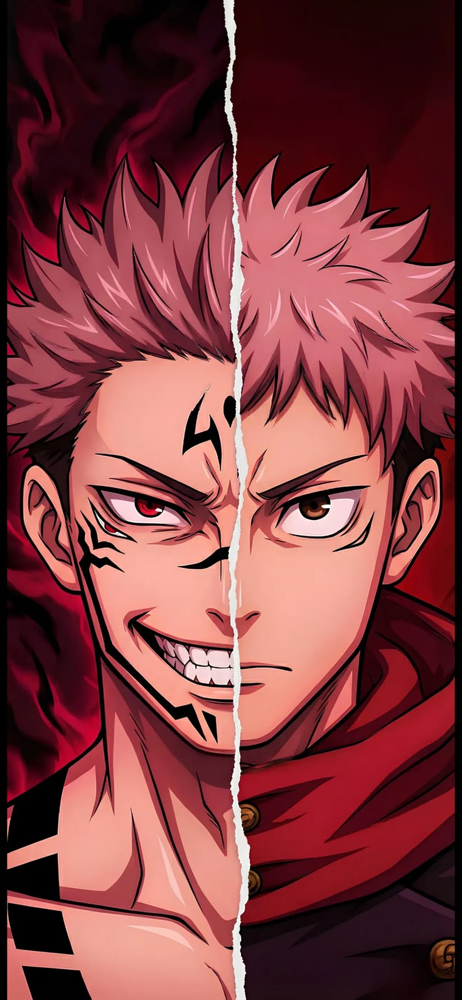
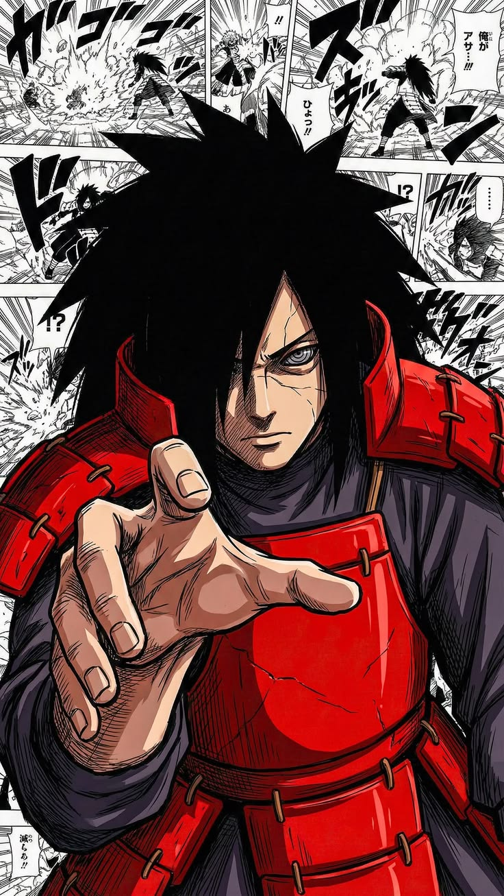
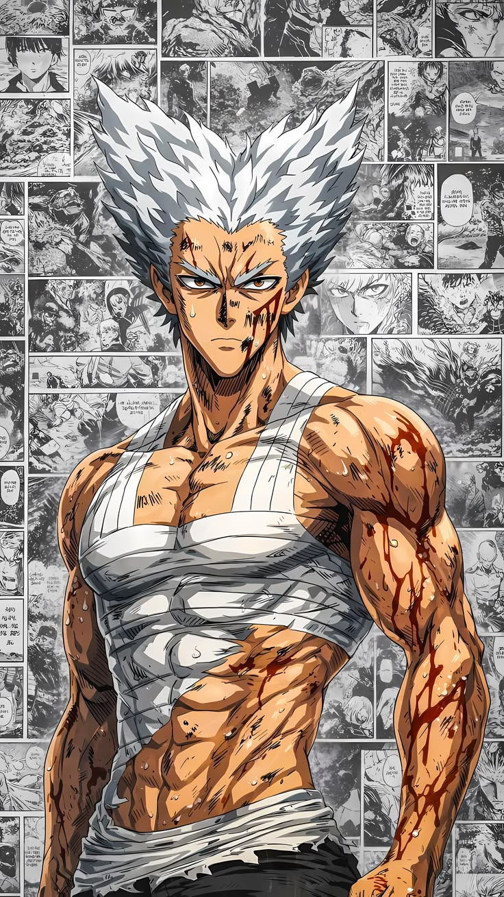

TOP 1
Yūji Itadori
Yūji Itadori es el protagonista principal del manga y anime Jujutsu Kaisen. Es un estudiante de secundaria con una fuerza física sobrehumana que se convierte en hechicero tras consumir uno de los dedos de Ryomen Sukuna (el Rey de las Maldiciones) para salvar a sus amigos.

TOP 2
Madara Uchiha
Madara Uchiha es uno de los antagonistas principales de la serie de anime y manga Naruto. Es considerado el ninja más poderoso de la historia, cofundador de la Aldea Oculta de Konoha y el líder legendario del Clan Uchiha.

TOP 3
Garou
Garou es un prodigio de las artes marciales y el autoproclamado "Cazador de Héroes". Fue el principal antagonista durante el arco de la Asociación de Monstruos.
